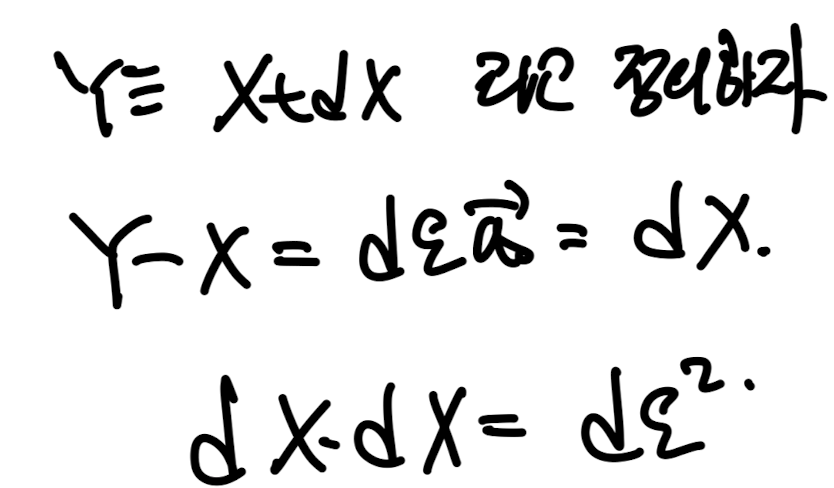

2.5 Strain tensor.
변형 전과 후의 body configuration

Y -> y, X -> x로 같은 점이 시간 t초후 이동함.
여기서, t =.0 일때의 두 위치벡터를 정의하고,
t = 0 일때 두 점의 위치 X,Y 에 대해
그 두 점을 잇는 단위벡터를 a0라고 정의하자.
두 점의 길이는 de.

두점 사이의 거리가 굉장히 가까운 경우를 살펴보자.
그리고 그 간격벡터를 dX라고 정의.

dX벡터는 위에서 정의한 a0, de를 가지고 표현 가능하다.
이제, 시간이 흐른후 위치 y,x를 기준으로 살펴보자.
mapping function
λ를 기준으로 y,x,를 표현하면 다음과 같다.

de a0항이 존재하기 때문에, Taylor Expansion을 적용해준다.
여기서 궁극적으로 우리가 하고 싶은 것은
변형후 두 점의 사이의 거리와, 방향을 알고 싶은것.

즉 초기 X,Y를 잇는 방향벡터 a0가 변형후 λa0로 변형되었다. 핵심은 a0는 단위벡터이었지만, λao는 단위벡터는 아니다.
지금 우리가 초기에 정의한 점 X,Y를 잇는 단위벡터는 a0이고,
이 단위벡터가 변형을 통해서 새로운 벡터로 변환되었다.

λao - 변형후 백터임.
위에서 y-x벡터를 정의하였으니
우리는 그 크기를 알수 있고, 기존에 비해 얼마나 늘어났는지를 알수 있다.
그리고 그 비율을 stretch ratio라고 정의한다.

stretch ratio : λ = 나중길이/ 초기길이
우리는 y-x , Y-X벡터를 모두 알고 있기 때문에
lambda를알고 있는 기호로 유도할 수 있다.

유도 결과 λa0(초기 단위백터의 변형후 벡터)로 나타낼수 있다.
여기서 lambda를 제곱해주면,
변형전 단위벡터를 기저로 하는 tensor가 등장하게 되고,
이 tensor는 Right cauchy green tensor라고 부른다.

그리고 여기서, 변형후길이와 전의 길이의 제곱차이로 strain을 정의한 후,
식을 전개해하게 되면, 새로운 strain tensor, E를 정의할 수 있다.

E: Green Lagrangian strain tensor라고 불리며,
small deformation인 경우 symm(gradu)로 표현가능하다.

결국 우리는 strain tenesor를
초기값들을 기준으로 정의하였다.
계속해서 말하지만 x <-> X는 서로 일대일 대응
즉, 상호 표현이 가능하므로,
이번에는 변형후값들을 기준으로 strain tensor를 정의해보자.

점 x,y에서의 값을 우리가 기준으로 X,Y 변형전의 벡터 크기와 방향을 분석해보자.
위와 같은 방식으로, 변형후를 기준으로 하기 때문에
변형후의 y-x 벡터의 단위벡터를 a, 크기를 de~ 라고 정의한다.

변형후의 단위벡터, 크기를 기준으로 변형전의 벡터들을 표현한다.
여기서, 변형후의 단위벡터도 변형전에서 변형이 된 것이기 때문에
변형전의 벡터를
λa^(-1)으로 정의하자.

이후 4번식을 위에 새롭게 정의한 vector로 정리해주면,

우리가 stretch ratio와
λa^(-1)의 관계를 알수 있게 된다.
여기서 새로운 tensor를 정의할수 있고,
Left cauchy green tensor(b = F FT)

이제 맨처음의 방식과 동일하게,
변형후 벡터의 크기, 후의 크기를 가지고 strain을 새롭게 정의할수 가있다.

2.6 Rate of Deformation Gradient Tensor.

spatial velocity gradient tensor
즉 velocity를 x로 미분한 tensor를 l(x,t)라고 새롭게 정의하자.
이와 반대로 Material Velocity Gradient tensor, 즉 속도 V를 X로 미분한 텐서도 정의가능하고,
그 값은 DF(X,t)/Dt와 동일하다는 것을 알 수 있다.

이후 chain rule을 통해서,
Material Velocity gradient tensor(l(x,t))
Spatial Velocity Gradient tenesor(DF/Dt))
의 관계를 구할수 있다.

(추후에 자주 쓰임)
1.241즉 1단원에서 배웠던,
tensor의 tensor 미분항을 작성해보고 A -> F를 대입해보면
1번식을 도출 할 수 있다(det F = J)

2번식은 바로 위에서 유도한 식,
1,2번 식을 이용하여 우리는 DJ/Dt를 유도할 수 있다.

추후에 쓰일 예정 3번식 기억하자.